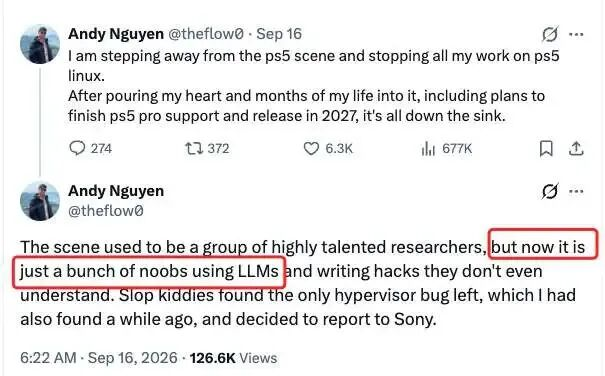
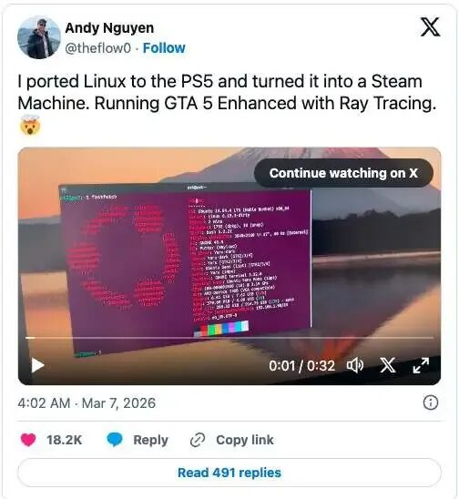
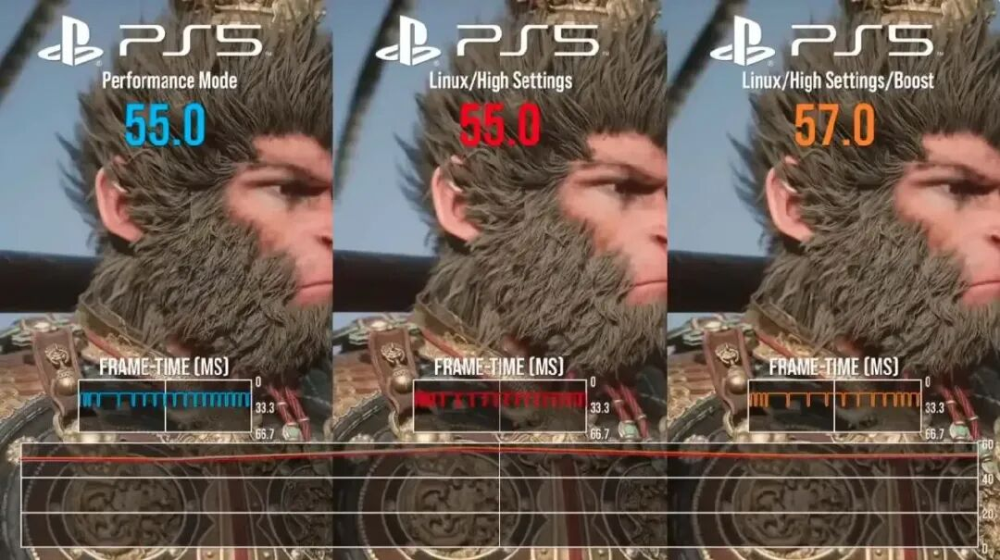
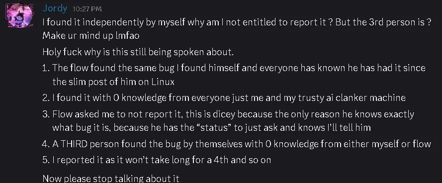
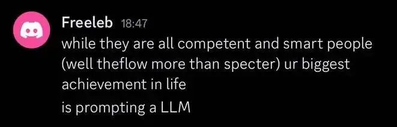

「只剩一群用 LLM 的菜鸟」：顶级黑客怒退 PS5 Linux 项目，几个月心血全打水漂
来源：微信公众号 归档日期：2026-09-18 抓取状态：成功 原文字符：6729｜配图：10 张
摘要速览
- PS5 Linux 核心开发者 Andy Nguyen（TheFlow，VitaShell、PPPwn、CVE-2021-22555 作者）9 月 16 日怒退 PS5 圈：其发现的 PS5 虚拟机监控器漏洞被借助 LLM 的研究者 Jordy 通过 HackerOne 报告给索尼领走赏金。
- 事件链：Nguyen 想留漏洞到《GTA 6》发售之后；Jordy 原本答应等待，几小时后第三人也用 AI 找到同一漏洞，Jordy 抢先上报；漏洞提交厂商即无法撤回，Nguyen 的 2027 年 PS5 Pro 支持计划告吹。
- 两个不对称：①「生成改动的成本」越来越低，而理解和处理后果的成本仍由少数核心开发者承担（低质量 PR 可拒收，漏洞上报却无法撤回）；②LLM 正在把「理解系统」和「改变系统」解绑。
- 争议双方：支持者认为漏洞本可服务整个社区；反对者认为独立发现者有权决定去向。
核心内容
- 事件本质：当发现（AI 辅助）成本趋零、不可逆动作（上报厂商）的门槛建立在信任约定上，旧的荣誉与默契体系失效。
- 「理解/改变解绑」是 LLM 时代最深的变化之一：会用工具但不理解系统的人也能对系统造成不可逆影响，责任模型需要重建。
- 生态治理缺口：HackerOne 类流程没有「延迟披露协商」机制，第三方提交使原约定无法执行。
可执行启发
- 团队协作约定（如「谁先发现谁主导」）必须有流程兜底，不能只靠口头承诺——不可逆动作前加确认环节。
- 引入 AI 辅助研究/开发时同步评估「不可逆动作的审批边界」，把生成成本与后果成本重新对齐。
归属：[[02-输入/按主题/认知与思维/_index|认知与思维]]
我的想法
（待补充）
原文沉淀
目录
作者 | Tina
“这个圈子过去聚集着一批才华横溢的研究人员，如今却只剩下一群使用 LLM 的新手，写着一些连自己都不理解的破解代码。”
9 月 16 日，PS5 Linux 核心开发者 Andy Nguyen 在 X 上写下这段话，随后宣布退出整个 PS5 圈子，停止自己在 PS5 Linux 上的全部开发工作。PS5 Linux 是一个开源项目，其加载器代码已采用 GPL 3.0 许可证发布在 GitHub。
“我为这个项目倾注了全部心血，投入了几个月的人生，原本还计划完成对 PS5 Pro 的支持，并在 2027 年发布。现在这一切都打了水漂。”

让他彻底放弃的，是一群被他称作“slop kiddies”（AI 垃圾小鬼）的人。他们用 LLM 找到了 PS5 仅存的那个虚拟机监控器漏洞，然后把它报告给了索尼，领走了赏金。这个漏洞，Nguyen 自己也早就发现了。他一直没有上报，想把它留到《GTA 6》发售之后——让玩家有机会合法买到新游戏，同时还能继续用 Linux。
Nguyen 称，他曾请求对方至少等到《GTA 6》发售，对方也答应了。
“连一天都没过去，他们就决定把这个漏洞白白浪费掉。”
开喷的人，真的有资格看不起“AI 菜鸟”
Andy Nguyen 在安全研究圈的名字是 TheFlow，在 PlayStation 圈活跃了十多年。PS Vita 的 VitaShell、h-encore，以及 PS4 的 PPPwn 远程代码执行利用链，都是他做的。
在 PlayStation 之外，他还研究过 Linux 内核的 Bluetooth 协议栈，发现了一组可以实现零点击远程代码执行的 BleedingTooth 漏洞。他发现的 CVE-2021-22555 则是一个在 Linux Netfilter 中潜伏了 15 年的越界写漏洞，可以绕过现代安全缓解机制并取得内核代码执行权限。
Nguyen 曾利用这个漏洞突破 Kubernetes Pod 隔离，获得 1 万美元奖金，并将奖金捐给慈善机构。Google 随后将捐款翻倍至 2 万美元。
今年 3 月，他在 X 上发布了一段视频：一台 PS5 运行 Linux，启动 Steam，跑 PC 版《GTA 5 Enhanced》，1440p、光追开启、稳定 60 帧。他用的漏洞叫 Byepervisor，绕过索尼的虚拟机监控器，拿到内核级控制权。
他的愤怒，很大程度上来自这项工作已经真正跑通了。

今年 5 月，Digital Foundry 在 PS5 Linux 上测试了《黑神话：悟空》和《控制》。最意外的是，《黑神话：悟空》经过 Proton 转译后，性能竟然和 PS5 原生版十分接近；《控制》开中档光追，大部分时间能维持 50 至 60 帧。

PS5 Linux 已经不再是“点亮桌面”的黑客表演。一台只能运行索尼许可软件的封闭主机，真的被改造成了能玩现代 3A 游戏的 Linux 电脑。Digital Foundry 说，“尤其是看到《黑神话：悟空》的结果时，你多少能体会到那个梦想：把一台封闭的游戏主机解放出来，将它变成一台 Steam Machine。这件事非常迷人、非常酷。”
Nguyen 接下来要做的，是把这套系统带到 PS5 Pro，计划于 2027 年发布。偏偏在这个时候，他原本准备用于支持更新固件和 PS5 Pro 的虚拟机监控器漏洞，被别人报告给了索尼。
已经公开的 PS5 Linux 不会消失，其他开发者也可以接手现有代码；但尚未完成的 PS5 Pro 支持并未进入代码仓库。
Nguyen 辛苦了几个月，离 PS5 Pro 只差最后一段路，路却先被堵死了。
用大模型，“菜鸟”乱拳打死老师傅
把漏洞报告给索尼的人叫 Jordy，也是一名 PS5 黑客，但与 Nguyen 这样的老牌研究者相比，他更依赖 AI 工具。
Jordy 表示，这个虚拟机监控器漏洞是他借助自己那台“可靠的 AI 铁皮罐头机”独立找到的。Nguyen 得知后，请求他暂时不要上报，Jordy 也答应了。
但几个小时后，第三名研究者同样借助 AI 找到了这个漏洞。Jordy 随即改变主意。他认为，既然同一个漏洞已经被多人发现，继续保密也没有多少意义。很快还会有其他人将它交给索尼，抢走可能高达数千美元的赏金。9 月 15 日，他通过 HackerOne 提交了报告。
“简单总结一下：我报告给 HackerOne 的虚拟机监控器漏洞，也被 TheFlow 发现了。”Jordy 在随后的推文中写道，“他让我不要上报，我答应了。结果几小时后，又有人用 AI 找到了这个漏洞，所以我就把它报告了。”

“这个漏洞是我自己独立发现的，凭什么我没资格上报，第三个人却可以？”
PS5 破解社区很快爆发了一场争议。支持 Nguyen 的人认为，Jordy 把一个本可以服务整个社区的漏洞交给了索尼。只要再等一段时间，玩家就有机会在能够购买《GTA 6》的固件上保留漏洞，把 PS5 变成一台 Linux 电脑。现在，索尼很可能在游戏发售前堵上入口。
支持 Jordy 的人则认为，漏洞是他独立发现的，他有权决定如何处理。更何况，还有其他人也找到了，即使 Jordy 继续等，也无法保证其他人不会上报。
但更值得讨论的不是谁有资格上报这个漏洞。
Nguyen 花了几个月，才把一个虚拟机监控器漏洞变成能够安装 Ubuntu、调用 GPU、运行 Steam 和 3A 游戏的完整系统。这项工作需要理解 PS5 的安全机制、硬件驱动、内存架构和操作系统，还要持续处理兼容性和性能问题。

“他们（TheFlow）都是既有能力又聪明的人，而你这辈子最大的成就，就是给 LLM 写提示词。”
Jordy 不需要具备同等能力，但只需要借助 LLM 找到同一个漏洞，再向索尼提交一份报告，就足以改变 Nguyen 整条技术路线。
在普通开源项目中，Vibe Coder 可以在几分钟内生成一个 Pull Request，维护者却要花数小时判断代码能否运行、会不会引入回退。生成者制造改动的成本越来越低，理解和处理后果的成本仍然由少数核心开发者承担。到了安全研究领域，这种不对称更加明显。低质量 PR 还可以被拒绝，漏洞一旦提交给厂商，就无法撤回了。
Nguyen 气愤地说，这些人是“一群只会用 LLM 的菜鸟”，写着连自己都不理解的代码。可这一次，被他视为菜鸟的人，获得了决定这个漏洞去向的权力。
事情闹大之后，Jordy 还特地回击 Nguyen，给他送上了“致命的嘲笑”：
“快看，那个 LLM”。 “卧槽，他两个小时就做完了我们花五年才做出来的事”。“我宝贵的漏洞没了，都怪 LLM”。
AI 让“理解系统”和“改变系统”分开了
过去，“理解系统”和“改变系统”几乎绑在一起。要修改内核、寻找虚拟机监控器漏洞，通常得先花几年弄懂系统如何运行。理解得越深，才越有可能改变它，也更清楚一次改动可能造成什么后果。
这次涉及的漏洞没有公开技术报告，索尼和几名发现者也没有披露具体细节。LLM 究竟发挥了多大作用，外界暂时无法独立验证。但可以确定的是，LLM 正在让一种过去很难想象的情况成为现实：使用者不必理解每一行代码，也未必具备独立完成整个项目的能力，却可以在模型的帮助下不断尝试，最终找到真实存在的漏洞。
类似的事情已经在技术圈陆续出现。都灵理工大学学生 Kaan Şenol 借助 Claude Code，据其自述，前后用约一个月时间做出了 VibeOS。这个系统可以在树莓派上启动，能够运行《Doom》，还带有浏览器和 C 编译器。安全公司 Check Point 则发现，经验有限的 FunkSec 成员借助 AI 拼出了 Rust 勒索软件、DDoS 工具和一整套勒索服务。Anthropic 也披露过一名只有基础编程能力的网络犯罪者：他无法独立实现加密算法、反分析机制和 Windows 底层操作，却用 Claude 做出了多个勒索软件变种，并在地下论坛出售。
这些作品往往十分粗糙，代码中充斥着重复逻辑、硬编码和安全缺陷。VibeOS 缺少成熟操作系统应有的内存保护，FunkSec 的代码也被研究人员发现存在大量低级问题。可它们已经能够启动、运行、加密文件，甚至拿去卖钱。所谓的“AI 垃圾”，开始拥有真实的功能，也开始产生真实的后果。
就像 Jordy，他也不需要做出另一个 PS5 Linux，也不用证明自己能处理驱动、内核、GPU 和兼容性问题。他只需要用大模型找到一个漏洞，就足以改变整个项目的未来。
他发出的那张梗图虽然刻薄，但也真的很应景：老牌研究者可以嘲笑菜鸟不懂技术，菜鸟也可以反问——如果我用两个小时就碰到了你花五年才能找到的东西，你的五年究竟还意味着什么？
但没有那五年的积累，漏洞不会变成 PS5 Linux。
参考链接：
https://x.com/theflow0/status/2099987138385186836
声明：本文为 InfoQ 整理，不代表平台观点，也不构成投资建议，未经许可禁止转载。
今日好文推荐
谷歌连发两款实时语音模型：Gemini 3.8 Live 要攻克语音 Agent 的沉默时刻
英伟达内部限制使用Claude，黄仁勋告诉特朗普：我们不会让AI发展放缓发生
OpenAI故意欠技术债，等Codex来还：仅2名工程师，把核心存储从Python重写成Rust
会议推荐
QCon 全球软件开发大会·2026（上海站）将于 10 月 22 日—24 日举办。本届大会聚焦 Harness AI 时代的工程实践，从「构建 AI」到「驾驭 AI」，围绕 AI Native 架构、Agent Runtime、AI Infra、Agent 安全与可观测、Loop Engineering、具身智能与世界模型等热门技术方向，邀请全球技术社区与产业一线实践者，共同分享 AI Native 时代最具价值的工程经验。查看更多详情可扫码或联系票务经理 18514549229 进行咨询。
归属：[[02-输入/按主题/认知与思维/_index|认知与思维]]